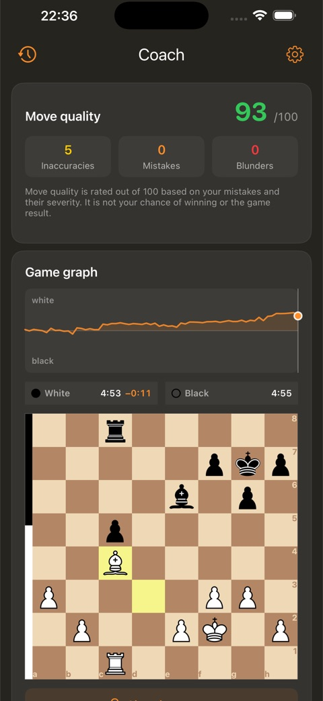
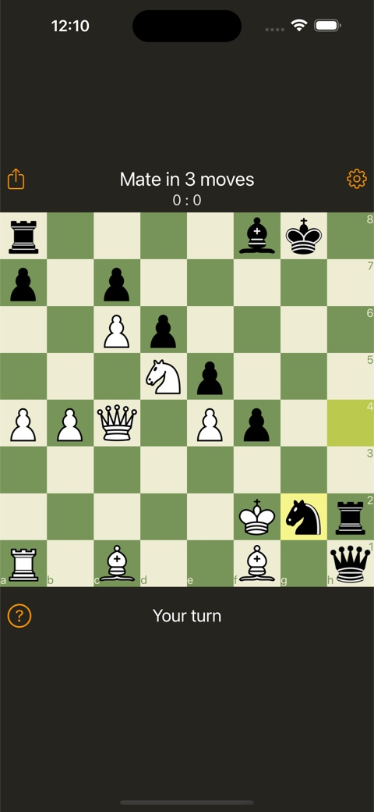
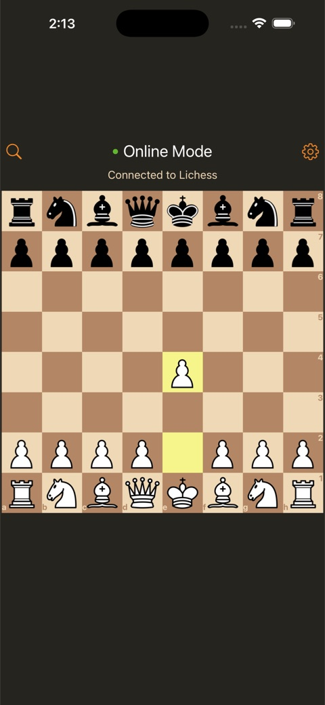
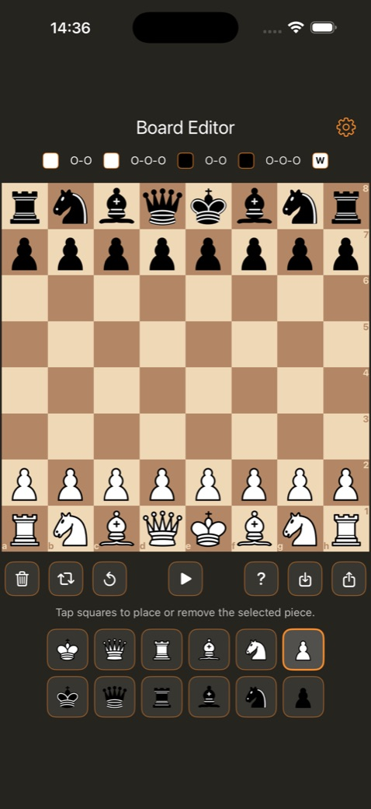
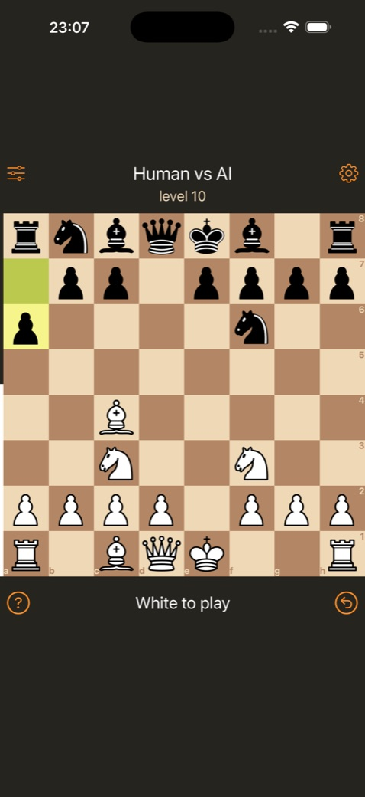
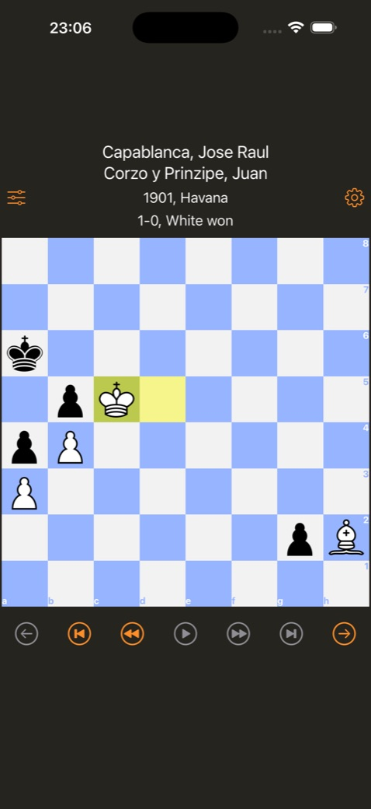
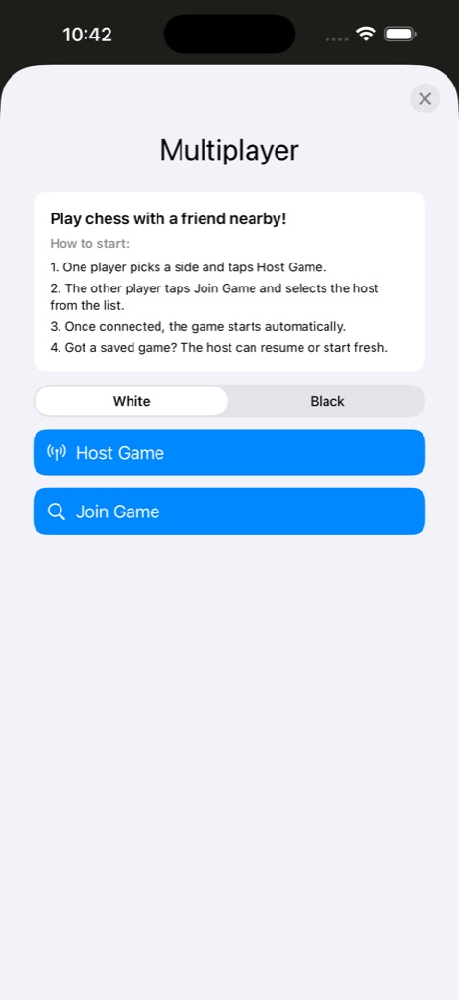

Make tactics a daily habit.
Add the widget to your Home Screen, then tap a position to solve it in the app. Choose from a built-in library of 11,000+ puzzles to practise mating patterns and finding the best move.
CHESS FOR iPHONE, iPAD & MAC
A fresh position on your Home Screen or Mac desktop. A quick puzzle between plans. A full game when you have time. Keep chess close, wherever the day takes you.
Download on the App StoreFree to download. Optional Pro subscription.

FROM ONE GOOD MOVE TO A FULL GAME
Add the widget to your Home Screen, then tap a position to solve it in the app. Choose from a built-in library of 11,000+ puzzles to practise mating patterns and finding the best move.
Connect your Lichess account to play online, share invite links and accept challenges. Or play a nearby friend using local multiplayer.
Coach mode helps you review move quality, inaccuracies, mistakes and blunders. Follow the evaluation graph, revisit critical moments and practise finding a better move.
Build a position in the board editor, use FEN to bring in a setup, and continue into play. Choose the board theme and sounds that suit you.
Play a full game locally against the built-in chess engine, even without an internet connection or a Lichess account. Pro adds a choice of computer difficulty levels.
Explore 100,000+ games across 48 built-in collections, from historical classics to modern grandmaster play. Replay them move by move. Follow how classic positions develop and discover ideas to bring into your own games. Pro adds player selection.
COACH MODE
Review your game, understand where the position changed, then return to that moment and try again.
Coach brings together a move-quality score, an evaluation graph and positions to practise. Connect Lichess to review your recent games. On iOS/iPadOS 17 and later, the latest Lichess game is available without Pro; selecting earlier games requires Pro.

A LOOK INSIDE






START ON YOUR HOME SCREEN
Install and open Chess Widget, then add its widget from your Home Screen’s widget gallery. Tap the puzzle whenever you have a moment to think.
Puzzles and computer practice work offline. Playing on Lichess requires an internet connection and a Lichess account.
FREE TO DOWNLOAD
Try Chess Widget for free. Pro unlocks the full selection of puzzle modes and additional game options, including computer difficulty and classic-game player selection.
See the available subscription plans and current price in your currency inside the app before subscribing. Pro subscription options require iOS/iPadOS 17 or later.
BEFORE YOUR FIRST MOVE
The widget displays the position on your Home Screen. Tap it to open Chess Widget and make your moves in the app.
Yes. The chess puzzle widget works on the Mac desktop as well as the iPhone and iPad Home Screen. Desktop widgets require macOS 14 Sonoma or later.
Yes, for puzzles and local games against the built-in chess engine. Online games and Lichess account features need an internet connection.
The built-in library contains over 11,000 puzzles. Pro unlocks the full selection of puzzle modes.
Yes. Chess Widget includes 100,000+ games across 48 collections, covering historical players and modern grandmasters. Replay them move by move. Pro adds the option to choose a player.
Yes. Play online through Lichess with invites and challenges, or use nearby multiplayer with a friend.
Only for the Lichess online features. You do not need one to solve local puzzles or practise against the computer.
Coach helps you review games, inspect mistakes and practise critical positions. You can see move quality and how the evaluation changes through the game. Connect Lichess to load your recent games; reviewing earlier Lichess games requires Pro on iOS/iPadOS 17 and later.
Yes. The board editor lets you create positions, use FEN, save setups and continue into play.
Chess Widget supports iPhone and iPad with iOS/iPadOS 15 or later, and Mac with Apple Silicon (M1 or later) and macOS 12 or later. Some features, including Pro subscription options, require a newer OS.
Email oleg.v.soloviev@gmail.com. Include your device model and app version if you are reporting a problem.
{kind=link}
{kind=link}
{kind=link}
{kind=link}
{kind=link}
{kind=link}